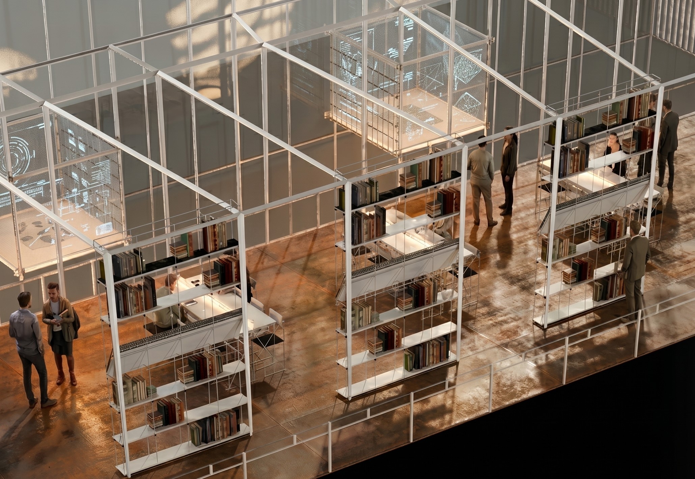
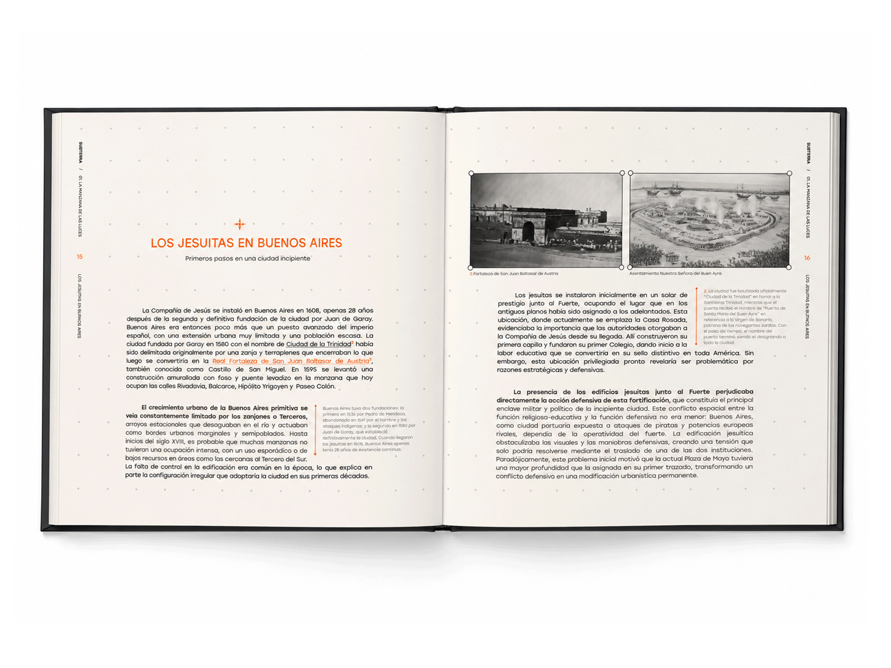

Este proyecto surge de la necesidad de visibilizar y proteger el patrimonio subterráneo de Buenos Aires,
particularmente la red de túneles jesuíticos de la Manzana de las Luces, única red subterránea documentada y
fechada de la ciudad. A pesar de su valor histórico y arquitectónico, estas construcciones permanecen
desprotegidas por la legislación patrimonial argentina, que se concentra exclusivamente en la preservación de
fachadas.
Subterra es un proyecto que busca cambiar eso: hacer visible lo que está enterrado, literal y simbólicamente.
A través de investigación histórico-arqueológica, mediación editorial y experiencia espacial y digital, propone
nuevas formas de acercarse a un patrimonio que no se puede evidenciar desde la superficie, pero que contiene
siglos de historia urbana. Porque proteger lo que no se ve empieza por lograr que la gente pueda verlo.

